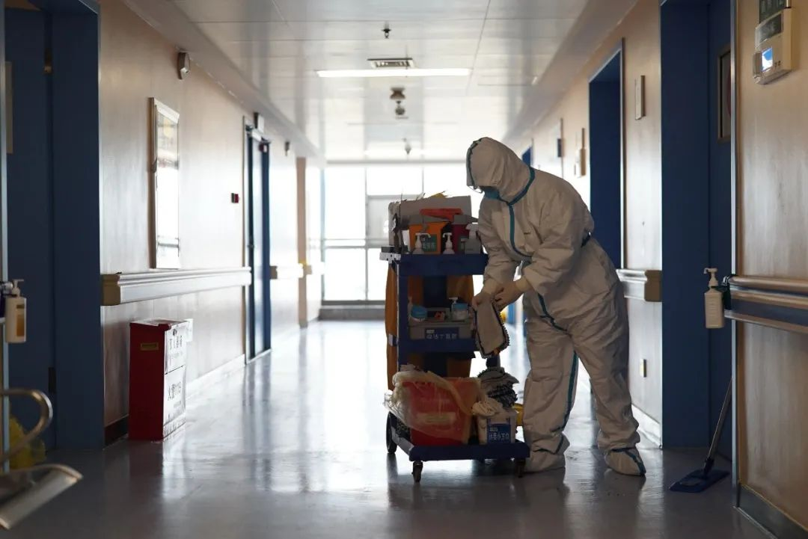
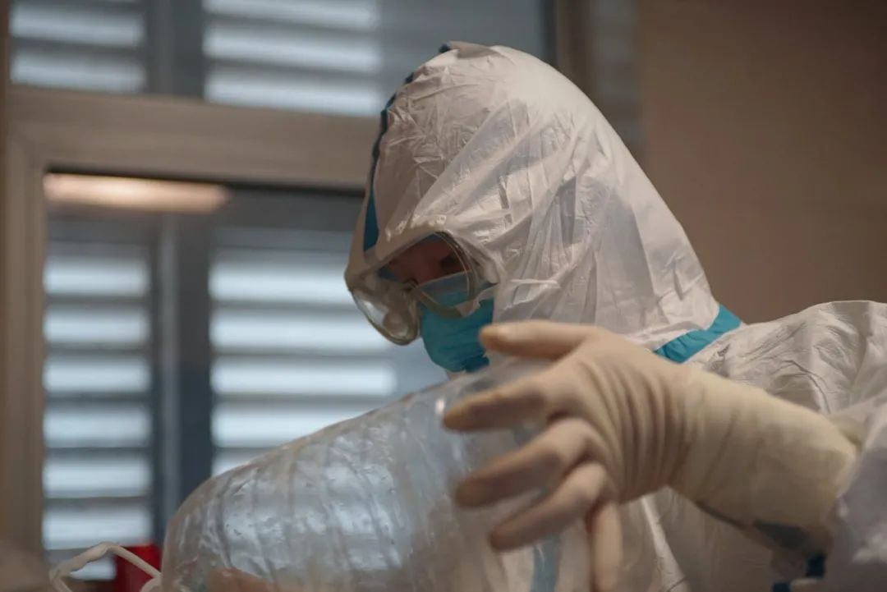
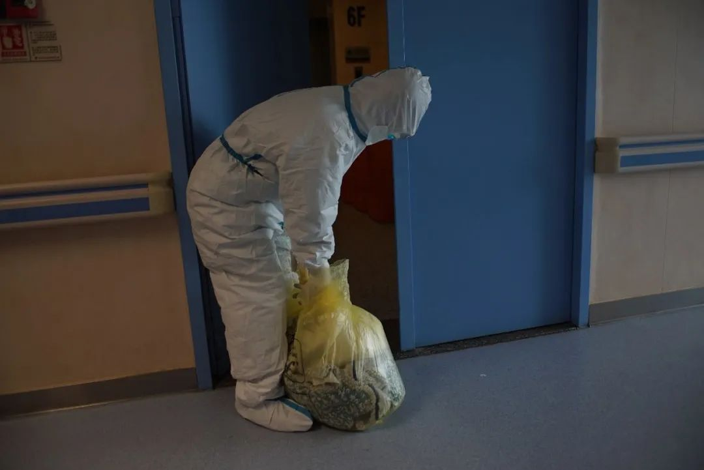
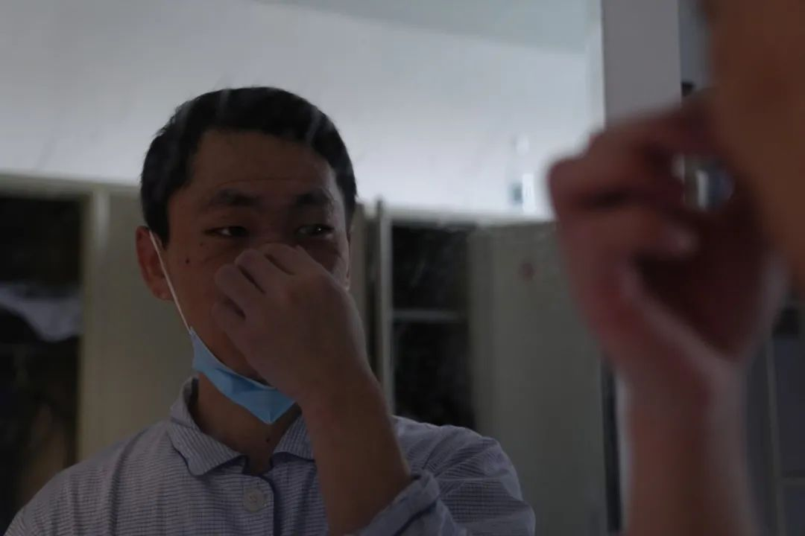
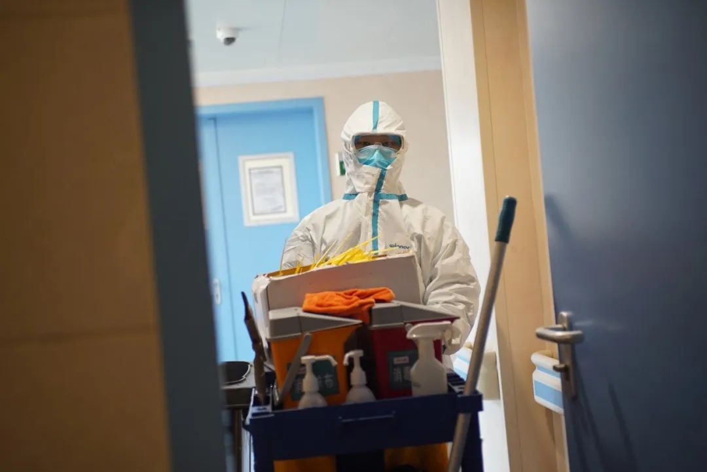

日行1000公里，“人肉”配送，一家民营医院的战“疫”实录
原文链接 备份链接 武汉济和医院的命运在1月23日那天分叉了。 小年夜，也是武汉发出“封城”公告的同一天，这家位于武汉蔡甸区的非公医疗二级综合医院被征用为新冠肺炎患者定点救治医院，成为武汉不到10家的首批定点医院中的一员，继而被推到了一场 …


口述 马洪全
采写 谢如颖
图片 陈玮曦

马洪全今年 27 岁，在武汉生活了 3 年多，本职工作是一名金融销售。2 月 9 日，武汉某医院招募志愿者，负责病房消毒和清理医疗垃圾。这大概是此次疫情中非医护人员所能从事的最危险的工作。
思考了一晚上，马洪全做好了最坏的打算，3 天后正式上岗。他说，只要身体条件允许，他会做到疫情结束的那一天。
以下是马洪全的自述：
( 一 )
2 月 9 号，我在微信群里看到消息，武汉某医院将紧急收治 800 个新冠病人，急需志愿者，负责病房内消毒和医疗废物的收集。新冠病毒主要通过飞沫、接触和有限气溶胶传播，到污染区和病毒零距离接触，稍有不慎，有极大的风险被感染。
我有些挣扎，想了很久，洗澡时在想，躺在床上也在想。最后得出的结论是没关系，我还年轻，万一被感染了这个后果还可以接受。我不想站在岸上（旁观），我一直想做这样的事情。
但是你说年轻人怕不怕人没了呢？也怕也不怕。怕的是我还有很多事没做，还有父母、爱人。不怕的话，怎么说呢，年轻人都有一份激情，有一个生活态度或者怎么样。
报了名，11 号培训，12 号正式上岗。我负责医院一层楼 18 个病房的保洁，一个病房三张床，54 个病人。
每早 8 点，手消毒后进入更衣室，换上干净的病号服，到清洁区后有 12 个步骤，做全身防护和消毒，两层头套、两层手套鞋套，还有防护面屏，每个步骤之间都需要拿酒精不断消毒。再依次进入三个缓冲间，之后到半污染区，这是医护人员离开时脱防护服的地方。收好这里的医疗废物，再进入污染区，也就是病房。

进到污染区，第一件事是配 84 消毒水，把 20 来个拖把头和 50 多个消毒小方巾浸泡 20 到 30 分钟。为了防止交叉感染，每间病房一个拖把头，每个病床一个消毒小方巾，不能混用。然后一间一间病房收集垃圾，卫生间的、房间的，封好再消毒。上下午各清理一遍，下午 5 点下班，每天如此往复。
最近医院的发热门诊缺清洁员，我就报名了，每天夜里 12 点到 2 点，偶尔医疗垃圾转运缺人手，我也会帮下忙加个班。
这些医疗和生活垃圾的感染性极强。像是药品盒、输液针管、盒饭的飞沫，还有卫生间废物，输液器万一刺破了皮肤那是百分之百感染。
新冠的典型症状包括呕吐和腹泻。有些病人来不及去卫生间，随地呕吐，或是排泄了出来。清理起来也很危险，首先你要消毒，用消毒抹布把它盖住，一个盖不了盖两个，两个盖不了盖三个，然后往上喷消毒物。消毒也需要一定的时间，等十分钟后消得差不多了，再清洁打扫，然后装到医疗垃圾袋，密封包装，放到回收的地方。再回去将原地消毒，再把清扫用具密封包装、放到回收处。这个过程每时每刻都很危险。
清洁和消毒要求高，我的工作量大到停不下来，也不敢停下来，因为运动量大，穿在里面的衣服，包括内衣内裤全部汗湿，你站在那里不动或是稍微停顿一下，全身都会冷飕飕的，受不了。你只能不停的干活。而且你干得越久，防护服的防护力也会下降，有时动作幅度过大，就可能会把防护服弄破，口罩有可能脱落。所以你只能逼着自己以最快时间完成。
有些垃圾必须要用手清理或是接触的话，那就得在原来的防护基础上再戴一层手套，处理完之后赶紧把那个手套取掉，密封包装，放到该放的位置。那时你根本无暇顾及可能被感染的压力，你如果不及时清理的话，传播和污染范围更大，潜在伤害的是所有人。

( 二 )
病房里的患者都非常配合，不断地和我说谢谢、麻烦，弄脏了病房或是卫生间，他们会觉得非常不好意思。有时同病房的老人行动不方便，他们会帮忙擦床、收拾盒饭，还会活跃气氛，讨论下电视剧情、家庭关系。
之前他们可能病得比较严重，打不上针，排队 10 个小时才能打上一针，第二天又排上 10 个小时打上一针，现在进了医院心态也慢慢稳定下来了。虽然我不懂疾病的具体情况，但是我能感受到各方面都在变好。
病友之间经常讨论病情，也相互打气。有个阿姨提到自己一直无法就医，情绪有些激动。之前她发烧比较重，找到社区，社区说没办法，医院没有床位，之后社区每天打电话，问她情况怎么样，她会说我今天体温多少多少。工作人员说，这还算好，蛮正常的，因为没继续烧。她说是啊，我吃了退烧药，但是我症状确实不是蛮好，而且持续了很多天了。她一直想去做检测，拖了很久之后，医院说你这个还真的蛮严重的。她就说是啊，我是很严重，一直跟你们说，你们一直说没办法。
她讲的时候我不会多回应，只是做个倾听者，尽可能不去触动病人情绪。
五病房的 14、15 床前几天出院，每次我一去，他都在喊，「哎呀，小伙子，盼星星盼月亮把你盼来了，帮我们调个台，我想看非城勿扰。」他们出院的时候，我蛮开心的，觉得自己的工作有意义。

这个时期信心比什么都重要，病友知道有人出院了，都很开心。那天我在拖地，有一个病人跟着电视唱起歌了。武汉前几天下雪，他们打电话回家，说雪好大。
在病房待久了，个别的老爷爷坐不住，经常去走廊闲逛、晒太阳，拿衣服出来晒。每次他一出来，医护人员都搀他回去，劝他走廊里的病菌更多。他不太听得进去，喊着要回家，我家住在哪里，要给孩子打电话，觉得我为什么要在这里。
这时沟通比较难，需要去引导他。今天我去他病房，发现早餐也没吃，桌上盒饭是昨晚的，他一直在念叨，前几天能上能下，这几天睡得多了，觉得好像有谁慢待他了，让他成了现在这样。我赶忙和他说，有些治疗手段或是药物可能导致睡眠多，你不要担心，先把饭吃了。他稍微缓和点，但还是一直在碎碎念。我一边收拾，把床摇起来，问他「这个高度可以了吗？」其实你不用和他拉锯战，感受到心意，就不会太抵抗。
有一天，有个老奶奶明显情绪低落，一直沉默，我也没敢多问。护士进来上心电监护仪，她不太同意，再进来问，老奶奶说「等下吧，让我休息一下。」我告诉护士，老奶奶比较悲观。护士说，她老伴昨天去世了。
医护人员其实比我们辛苦得多。我们费体力，他们身心俱疲。长时间穿着防护服，他们的鼻腔都是 84 消毒水的味道，脱了防护服可能还是很眩晕，根本吃不下饭。

( 三 )
这份志愿者工作之前，我在武汉一个隔离点做安保志愿者。那会儿隔离点刚设立，各种设施改造都很匆忙，匆忙归匆忙，病人已经入住了。我们几乎什么都做，消杀、保洁、安保全都负责。
人员招募也很匆忙，我们一天工作 12 个小时，两班倒，有时一个人，有时两三个人一起，负责 45 个疑似病患。说是疑似，其实大部分都只是因为没法检测而无法确诊，当时隔离点也没有任何治疗措施。有的志愿者做了一两天，觉得接受不了，或者身体受不了，就离开了。
后期病人越来越多，事就更多了。早上起来，要给每个房间发早餐，吃完了，再挨个放开水瓶在门口，之后再把早饭垃圾收走。当时你还没吃早餐，就有四五十个开水瓶和垃圾要收拾，完了又要测体温，测完又要送午饭。之后又是一个循环，又要送晚饭、送中药、测体温了。

那是我第一次密切接触患者，说不恐惧是假的。每次进患者房间时，我会吸一口气再进，进去有一种窒息感。房间时时刻刻关着门，我们尽量劝患者打开窗户，不通风的话，病菌含量也会增高。那时候不管进房间，还是进卫生间，都有一股窒息感。穿着防护服，汗不断往下流，各种闷热，但事情还要做。
有一次一位老人内急，他岁数比较大，体力不行，还戴着氧袋，我扶他去洗手间。到了那边他走不动了，一直往下坠，我一个人扶不住，赶紧叫人，两个人也扶不住，眼看不行了，赶紧拉个椅子过来，还是扶不起来，两个人根本架不起来。医生过来之后先让他躺着，把头垫着，赶紧叫 120。
他的妻子女儿也在那个隔离点，儿子症状比较轻在家隔离。他的女儿陪他上了 120，当晚他的女儿回来，重新办理入住。我问她老人情况怎么样，她说那天在 120 车上老人就去世了。
她讲得很平静，我们理解她的心情。老人在这里症状突然加重，我有些愧疚，说不上来，很复杂。最后她请我先不要把噩耗告诉她母亲。

( 四 )
我是湖北襄阳人，2015 年家人病重，我从深圳搬到武汉。三年多来，我从健身销售做到了金融销售，目前还在上电大。我非常喜欢武汉，不管你挣多少钱，在这里生活水平都挺好的。这里也有我的女朋友，有她在的地方就很安逸。
1 月 23 号封城之前，武汉一直是正常活动的，我们都不太清楚到底发生了什么。当时很多人过年回家了，我没回家，兼职做了地铁安检员，即使 23 号政府下达指令，必须戴口罩才能坐地铁，但还是有很多人没戴。
后面更多消息传来，才意识到疫情已经到一定地步了。武汉市民全都慌了，我也慌。我家楼下的超市人山人海，方便面、面条全没了。各项措施没来得及做，缺各种物资，出行指南都没有。那两天真的是很乱。我家在香港路上，家楼下就是一家医院，发热门诊挨着街道，从窗户往下看，人已经排到了街上。
这次疫情，无论你是富人还是中产，不管是公众人物或是政府官员，都特别平等，因为无一幸免。武汉封城阻止了传播吗？没有。它只是阻止了向全国和全世界传播，它在病人的家里传播。

这个疫情起源于武汉，各种机制没有到位，我们武汉人做得不对，武汉人没有重视，我们自己承担了后果，极其惨烈，医疗系统不堪重负都是武汉确确实实发生的事情。
有时候想到这些，都不想去看新闻，要么就去跟亲人视频聊天，或者玩一下手机、打打游戏，甚至就是发呆，发完呆你发现四点了，再发完呆六点了，有用吗？你能麻痹自己吗？每天无数次这样循环。
怎么办？只能每个人自救，任何人都不能置身事外，所有人才能得救。每个武汉人都在努力，默默无闻努力的人太多了，我做的微不足道。
做了志愿者之后，害怕交叉感染，我住进了医院安排的宿舍。家里的猫只能找人帮忙上门喂养。前阵子武汉封了小区，我只好发到社区群里，有个女孩子看到了，转天去了我家帮忙，添粮加水，还帮忙打扫了卫生。现在出门都是一件需要勇气的事情。我非常感谢她，给她发了红包，她没收，说自己是武汉人，对我的工作表达谢意。

我没有和家人说具体的工作内容，他们只知道我在做志愿者。我会给他们看一些医院的情况，虽然不在我身边，但是你讲给他们听，他能感同身受，能知道，知道了就会理解。
18 号医院给所有志愿者安排了 CT 和核酸的检测，转天结果全部是阴性，我松了口气，发了个朋友圈晒了下结果，说「可以继续安心战斗了」。只要身体条件允许，我会战斗到疫情结束那一天。

C O N T R I B U T O R S
责编：Neil
执行：本本
闭关期间，我修炼成十级清洁家电买手
有人替我们读懂了清洁家电那些参数，拿去抄
湖北救援行动中的这支队伍，是被「骂」出来的
不可思议的行动力，来自她们的「绝对准则」。
__________________


**给我好看！ **
**
原文链接 备份链接 武汉济和医院的命运在1月23日那天分叉了。 小年夜，也是武汉发出“封城”公告的同一天，这家位于武汉蔡甸区的非公医疗二级综合医院被征用为新冠肺炎患者定点救治医院，成为武汉不到10家的首批定点医院中的一员，继而被推到了一场 …
原文链接 备份链接 文/六筒 李岩半年前刚去过武汉，和家人去旅游，主要想看看黄鹤楼。那还是夏天，热气蒸得人头上冒烟。高温挡不住蜂拥的游客，摩肩接踵，拥塞的车辆在大道上艰难挪动。“真是个大都市”，她想。 李岩是河北医科大学第二医院呼吸与危重 …
原文链接 备份链接 **采写/胡琪琛 ** 编辑/计巍 宋建华 志愿者在雨中送爱心餐 在这次新冠肺炎疫情中，李小熊的身份有很多。她是司机志愿者、志愿车队队长、捐款人、募捐人，因为自己被感染，成了新冠肺炎感染者，又因父母感染，成了感染者家 …
原文链接 备份链接 曹彦/ 华中科技大学新闻与信息传播学院 伍杨的一身“行头”几乎把整个人都吞了。 臃肿的棉袄外套着白色的防护服，戴着皱起来的蓝色防护手套，头顶是一个半旧棒球帽，只露出染过色的齐肩短发，透明护目镜下是两层叠加的口罩。她站在 …
原文链接 备份链接 1月28日，宜昌市第一人民医院第三次派出5名护士支援新冠肺炎定点收治的机构——宜昌市第三人民医院，5位护士先后到达。 刘瀚和张禹就是本次增援团队中的两名成员。此前他们在医院微信群聊内向上级表示：“志愿报名，随叫随到”， …